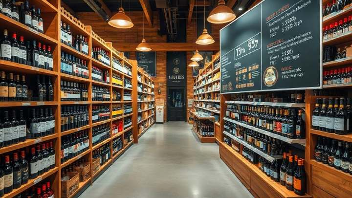

Type 21 · License only
SF-2001
$275,000
View SF-2001
San Francisco County · Type 21 · Off-Sale General
Ten Type 21 licenses on our San Francisco book, asking $78,000 to $275,000 — the license only, and every one of them on a page of its own.
The book
All 10, priced, with the day each came to market. We publish the city and stop there — not the neighborhood, because for an off-sale license the neighborhood is most of the business and naming it would name the seller.
Every entry below is one license at its own address, so you can open it, link to it or send it on without sending the whole class. Each one is the license alone — no premises, no lease, no fixtures, no kitchen, no goodwill, no stock.
Type 21 · License only
$275,000
View SF-2001Type 21 · License only
$250,000
View SF-2002Type 21 · License only
$225,000
View SF-2003Type 21 · License only
$205,000
View SF-2004Type 21 · License only
$185,000
View SF-2005Type 21 · License only
$165,000
View SF-2006Type 21 · License only
$145,000
View SF-2007Type 21 · License only
$120,000
View SF-2008Type 21 · License only
$98,000
View SF-2009Type 21 · License only
$78,000
View SF-201010 Type 21 licenses · asking $78,000 to $275,000 · median $175,000 · 9 available, 1 under offer · on the market 6 to 102 days.
Asking prices, availability and days on market are reviewed weekly and were last checked on 13 September 2026. Go to the inquiry form to tell the desk what you are opening.
The privilege
| Class | Type 21 — Off-Sale General |
|---|---|
| In plain English | A liquor store. Beer, wine and distilled spirits sold in sealed containers, taken away and drunk somewhere else. |
| Food obligation | None. There is no eating-place requirement on an off-sale license. |
| Minors | May be on the premises and may work there subject to the usual rules, but may not purchase. Sales require the checks you would expect. |
| Hours | California permits sale from 6:00 a.m. to 2:00 a.m. San Francisco off-sale licenses commonly carry conditions narrowing that, and those conditions transfer with the license. |
| Quota status | Quota class. San Francisco is over the county ceiling for off-sale general licenses, so no new original issues and the only supply is an existing holder. |
| Moving it to another address | A premises-to-premises transfer inside San Francisco County is possible with ABC approval and a fresh 30-day posting, but an off-sale move draws more local attention than an on-sale one. Moving a quota license out of the county is generally not available. |
| Local approval | Separate from ABC, and the harder half. Parts of San Francisco restrict new off-sale alcohol uses under the Planning Code, and a conditional use may be required at your address. This is a question about the location, not about you. |
| Conditions to read before you buy | Off-sale licenses here often carry conditions from old protest settlements: no single-serving sales, no fortified wine, reduced hours, signage limits. They travel with the license. We read them before listing and you see them on qualification. |
| Included in the price | The license. No premises, no lease, no fixtures, no shelving, no goodwill, no stock. |
This table summarizes the class from the Department of Alcoholic Beverage Control’s own definitions and from how San Francisco files actually run. It is a summary, not a quotation, and it is not legal advice — conditions on an individual license override the general picture, and you will see those on qualification.
The room
A license is an abstraction until you picture the shop. A San Francisco Type 21 is a room built around shelving and a counter, and the spirits behind it are the reason the license costs what it does.


Seeing a specific room happens after qualification and the mutual NDA, in person and with the seller’s consent. Until then the page carries the county, the class, the price and the dates, which is everything you need to shortlist.
The band
Type 21 licenses on our San Francisco book run from $78,000 to $275,000, with the middle of the book at $175,000. That is a three and a half fold spread on ten licenses — the widest of any class we hold here — and it is genuinely informative rather than noise.
Conditions move an off-sale price more than anything else. A license carrying settlement conditions — no single servings, no fortified wine, a 10 p.m. stop, restricted signage — is a materially different asset from a clean one, and the market prices that gap hard. At the bottom of this band you are usually buying conditions; at the top you are usually buying their absence.
Trading history moves it next. An off-sale license that has run without a protest or a discipline entry is worth a premium, because the next protest is easier to defend and the transfer is quicker to clear.
Your Planning district decides whether any of this matters. Parts of San Francisco restrict new off-sale alcohol uses regardless of license class. A cheap Type 21 at an address that will not clear is not cheap; it is unusable. Send us the address before you pick a license.
Read off our own current San Francisco book on 13 September 2026 and restated whenever the book changes.
Beyond the price
The asking price is not the cost of the deal. Here is the rest of it, itemized against the $175,000 median.
Three columns. On a narrow screen the table scrolls sideways inside its own box — the page does not.
| Item | Paid to | Amount |
|---|---|---|
| Escrow fee | Licensed escrow holder, as Bus. & Prof. Code §24074 requires | $1,450 |
| ABC person-to-person transfer fee | California Department of Alcoholic Beverage Control | $1,250 |
| Notice of intended transfer, published | Newspaper of general circulation in San Francisco | $385 |
| Live Scan and fingerprinting, two principals | California Department of Justice, via ABC | $160 |
| Buyer’s counsel, ABC transfer work | Your attorney | $4,800 |
| Costs to close | Excluding the license price | $8,045 |
| This license plus costs to close | $175,000 + $8,045 | $183,045 |
The whole price goes into escrow, not a deposit. This is the part that surprises buyers coming from other states. California requires the full consideration for a license transfer to be placed with a licensed escrow holder before the transfer is approved, and it is released to the seller only on issue. There is no 10% and no balance on completion.
Conditional use, where San Francisco requires it. A change of license or a new alcohol use in many of the city’s Neighborhood Commercial Districts needs Conditional Use Authorization from the Planning Commission before ABC will act. Budget $3,000 to $8,000 and three to five months for that track, and treat it as separate from the figures above. It is the single largest source of San Francisco timetable slippage.
After you hold it: the ABC annual renewal on a San Francisco on-sale general license runs about $1,400, and about $700 on an off-sale.
Our commission: 4% of the accepted price, paid by the seller at closing. There is no buyer-side fee, no registration fee and no charge for the confidential file once you are qualified.
Financing: a license is not mortgageable the way real property is, and most California lenders will not lend against one alone. We work with two lenders who underwrite license transfers as part of a wider fit-out facility and will make an introduction.
Fee amounts are our current working figures for a San Francisco file and were last checked on 13 September 2026. The escrow requirement, the conditional-use track and the renewal bands are described from practice rather than quoted from a fee schedule — confirm the current ABC fee schedule and your Planning district before you sign anything.
The timetable
Six stages, 78 days from an accepted offer to a license in your name. Thirty of those days are a statutory posting that nobody can shorten.
7 days. A purchase agreement, then escrow with a licensed escrow holder. California requires the full consideration to sit in escrow before the Department will approve the transfer, so this is the point your money moves, not completion day.
10 days. The person-to-person transfer application, Live Scan fingerprinting for every principal, and proof of funds. This is also when the mutual NDA is signed and the confidential file — license number, licensee of record, premises address, term, encumbrances, tax position — is released to you.
30 days. ABC posts the application at the premises for 30 days, and the notice of intended transfer is published in a newspaper of general circulation. The 30 days are statutory and cannot be shortened, whatever anyone promises you.
14 days. Any protest filed during the posting is worked through here, and this is where San Francisco can add time: the Police Department’s alcohol liaison reviews on-sale applications, and a Planning conditional use, if your district needs one, runs on its own much longer calendar.
10 days. The investigator confirms the premises, the qualification of the buyer and the tax position of the seller. Clean files clear here without anyone hearing from anyone.
7 days. Approval issued, escrow released to the seller, license recorded against you. You can trade.
Stage day counts are the medians from our own closed California files and add to 7 + 10 + 30 + 14 + 10 + 7 = 78 days, which is also our median from accepted offer to issue. The 30-day posting is a statutory period; the rest is how San Francisco files actually run.
Released when you qualify
Not masked, not blurred, not shown in part. They are simply not published, for any license, anywhere on this site. A seller is almost always still trading. In a city where a neighborhood and a license class narrow a business to a handful of doors, publishing either one tells their staff, their landlord and the operator across the street that they are selling. So the shop window carries everything you need to shortlist, and nothing that identifies the seller.
Published on every listing
Released after qualification and NDA
How the release works. Qualification is two things: proof of funds, and the personal information every principal has to give ABC anyway. Sign a mutual non-disclosure agreement and the complete file is released to you within one business day. There is no fee for it. Four further San Francisco licenses are held entirely off-market at the seller’s request and are only ever shown this way — they are not among the 30 on the book. Qualification starts at the inquiry form.
Type 21 · San Francisco
Seven fields. We reply inside one business day, from a named person, with the next step and nothing else. No newsletter, no drip sequence, no call center.
Tell us the venue and we will tell you the license, rather than the other way round — and whether the sensible route is to buy one on the book or to apply for a new one. We handle whichever it is.
Prefer to talk? The direct line is (800) 799-9081, or write to desk@liquorlicenseagents.com.
Inquiring commits you to nothing, and there is no buyer-side fee.
The other side of the desk
What we need to list it. The license number, the licensee of record and the premises address, so we can read the register entry, the conditions and the term before we price anything. None of that is published. What goes on the page is the county, the class, the asking price, the date and the status — the fields you can see on every entry above, and nothing else.
What it costs you. 4% of the accepted price, paid at closing out of escrow. Nothing up front, nothing if it does not sell, no listing fee and no renewal. You pay your own counsel and the escrow holder.
How long it takes. Two clocks. Finding a qualified buyer is the one that varies — the 10 Type 21 licenses on our book have been listed between 6 and 102 days. Once an offer is accepted the 78-day transfer timetable applies to you exactly as it applies to the buyer, and 30 of those days are a statutory posting nobody can shorten.
What stays confidential until a buyer qualifies. Everything that identifies you. Your staff, your landlord, your suppliers and the operator across the street learn nothing from this page. A buyer sees the identifying file only after proof of funds and a signed mutual NDA, and you see who they are at the same moment they see who you are.
Questions
Distilled spirits. Both classes are off-sale — sealed containers, taken away, nothing drunk on the premises — and both cover beer and wine. The Type 21 adds spirits, and because the Type 21 is quota-limited in San Francisco and the Type 20 is not, that one difference is the whole price gap between $15,000 and $175,000.
Ask for the full condition set on the individual license before you agree a price. In San Francisco the common ones come out of old protest settlements: no sales of single servings, no fortified wine above a stated strength, a closing time earlier than the state limit, limits on window signage, sometimes a requirement to keep a certain proportion of the floor in groceries. They transfer with the license and they are not negotiable at transfer. We read them before we list and you see them the day you qualify.
Inside San Francisco County, with ABC approval and a fresh 30-day posting at the new address. Expect more local attention than an on-sale move attracts, and expect the Planning district to matter: parts of the city restrict new off-sale alcohol uses under the Planning Code whatever ABC decides. Out-of-county moves are generally not available for a quota license.
Because conditions and trading history vary far more on off-sale licenses than on on-sale ones, and both transfer to the buyer. The bottom of the band is usually a conditioned license; the top is usually a clean one with a long unprotested history. The spread is information, not noise — read it as a condition ladder rather than a quality ladder.
Just the license, as far as we are concerned: every price on this page is for the license alone, with no premises, lease, fixtures, shelving, goodwill or stock. You do need an approved address before ABC will issue it to you, which is why the site question on the inquiry form is not a formality.
Activity, honestly
Every Type 21 above carries the day it came to market and how long it has sat there — on this class, from 6 days to 102. That is a fact we can stand behind. What you will not find anywhere on this site:
Elsewhere in this market you will find view counters, watcher counts and bid tickers on licenses that have never taken a bid. We would rather publish the one activity signal that is checkable — the day a license came to our book, and how long it has sat there — and nothing we cannot stand behind.
Who you are dealing with
Broker
Files closed
Escrow held by
ABC counsel
The other classes
Six classes have a page here. Four hold resale stock and two hold none, which changes the route rather than the answer. The wrong class is an expensive mistake to unwind, so here are the others.
On the book now

A full bar inside a restaurant. The deepest class in San Francisco and the one most buyers mean when they say “a liquor license”.

A bar or nightclub license: the same drinks as a Type 47 with no kitchen obligation, and nobody under 21 on the premises. Genuinely rare here.
Beer and wine sold sealed, to take away. The one class on this site that is not quota-limited — which changes the advice completely.
No resale stock — reached by applying

On-sale beer and wine for a bona fide eating place. Nothing on the resale book right now, and the route to one is an application we run for you.

On-sale beer. Nothing on the resale book right now, and the route to one is an application we run for you.
Type 41 (On-Sale Beer and Wine, Eating Place) and Type 40 (On-Sale Beer) each have a page of their own. Neither has resale stock on our San Francisco book right now, and both pages set out the application route instead.